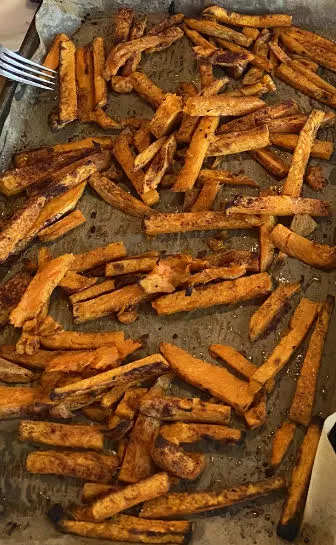

Basic Sweet Potato Fries Recipe

A simple, tasty, and healthy carb based snack.
Ingredients
- 1-2 Sweet Pototoes (try different types)
- Olive Oil
- Cinnamon
- Rosemary (optional)
Directions
- Set oven heat to 425°F (220°C).
- Grab a pan and put a layer of parchment paper (or aluminum foil) on it.
- Chop the potato(es) on your cutting board with a sharp knife throwing them onto the pan.
- Drizzle the fries with olive oil. Toss the fries with clean hands to coat the fries in olive oil. Now wash your hands with soap to remove excess olive oil.
- Top generously with cinnamon and salt. Pepper and/or rosemary may be added for additional flavor if desired.
- Put in preheated oven. Setting timer for 20 minutes.
- At 20 minutes, flip the fries. Rubber tongs make it easy to grab and turn a lot.
- Return to oven setting timer for another 10-20 minutes depending on quality of the oven and desired crispiness.
- Enjoy. Maybe them put in a glass bowl.
Notes
- A fast method to cut the the sweet pototoes is first into fourths, slice the fourths, chops the sliced layers while stacked into fries.
- If you want to experiment with a variety of fats, consider combining the olive oil with grass-fed butter and coconut oil. I believe the issue with coconut oil is it likes being cooked at lower temperatures or else the health quality of the oil will degrade.
Contribution
Shane Kunz - Website